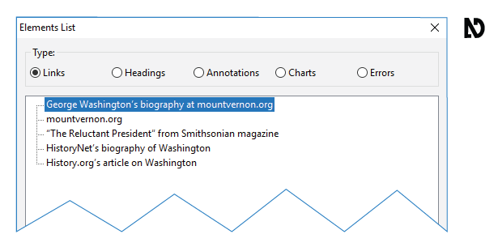
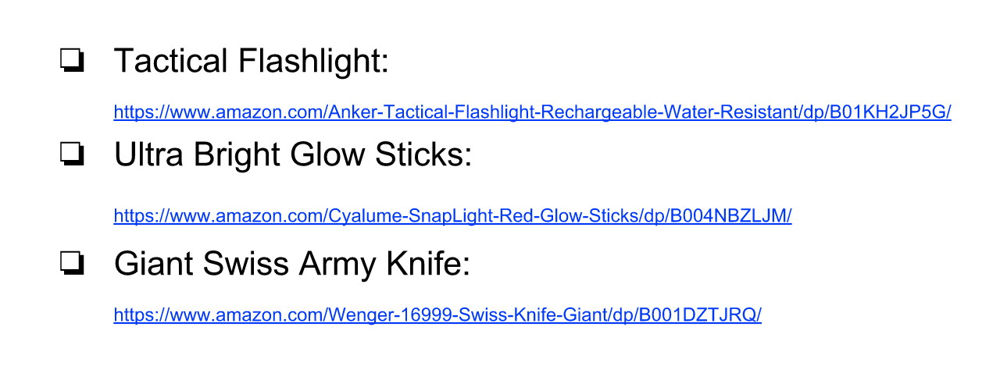
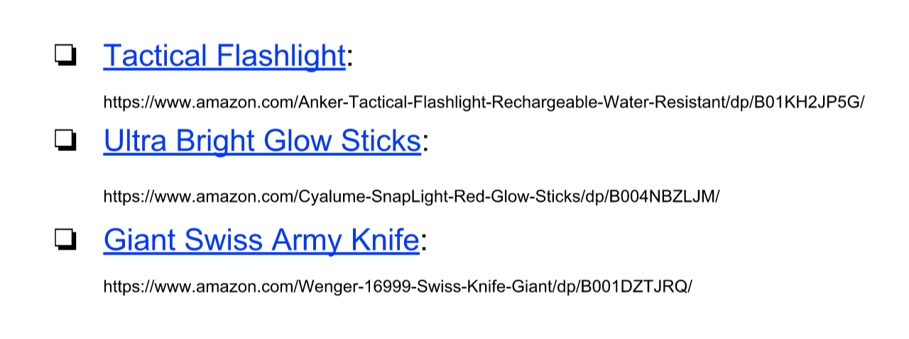
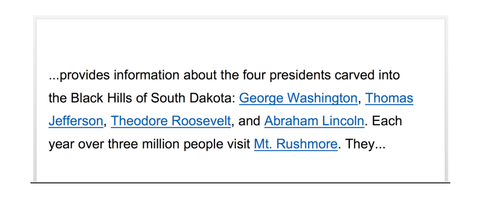
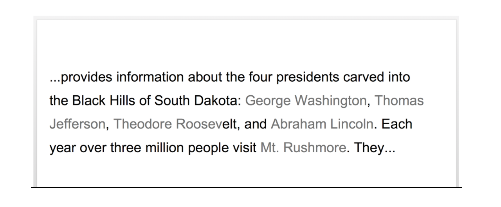
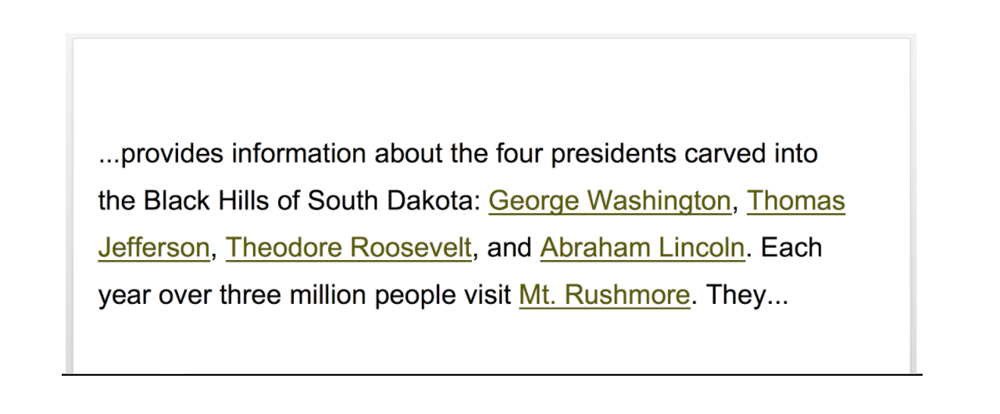

Video
Guide
Optimizing Hyperlinks
Microsoft Office uses the term "Hyperlink" for a document element that is connected to a web page or file, another location within the document, or an email address. When referring to hyperlinks, I'll also use the shortened form of this term: "links." The two videos in this section are focused on creating links with document text. Information on creating links with graphic elements—for example Pictures and Charts—will be provided in the "Images" section of this course.
Objective
- State four characteristics of optimized link text.
Users activate links by:
- Clicking with a mouse
- Using a keyboard
- Through assistive technologies (based on other types of user input, such as, voice commands or eye movement)
Four Characteristics
Linked text that is optimized for accessibility is:
- Descriptive
- Concise
- Unique
- Visually distinct
Descriptive
Linked text should clearly describe the function of a link. Screen reading software users can access a list of the links in a document, and may choose to navigate link by link.

Ambiguous linked text may require a screen reader user to stop and read the content before and after a link in order to determine its function.
For example, consider the text “Click here to read Appendix 1.” The text currently used for the link—"click here"— does not make sense when isolated from its context. A better choice for the text of this link is “Appendix 1,” or “Read Appendix 1.”
Concise
Linked text should be concise—brief, yet comprehensive. A link with a large amount of text may be difficult to understand when it is seen or heard. In most cases, use just a few key words for your link text.
Printed URLs
That being said, there are times when you will want to provide the full address of a web resource. When a web document is designed to be printed out, it is a common practice to present the Uniform Resource Locator (URL) for linked resources. However, a URL may be difficult to understand, particularly if it is lengthy and/or being read by screen reading software.

Provide URLs in Normal text
To address this issue, create a Hyperlink with text that can be understood the first time it is heard or seen, and use unlinked document text text to provide the full URL. For example, consider this checklist of product names and URLs of items to purchase for a camping trip. I’ll optimize this document by removing the default links created with the URL text, and creating links with the text of the product names.

Unique
Two or more links with the same text can introduce confusion, especially if they link to different resources.
Visually Distinct
When possible, provide linked text that is unique in the document. Sighted users must be able to visually identify linked text in a document. Linked text in documents using the built-in styles and color theme is underlined and blue. This default shade of blue has good contrast with a white background and the default black color used for unlinked text.

Users may not realize that a block of text is linked to a resource when the Hyperlink formatting deviates from this established visual style.

You will learn about the requirements for contrast—the difference in brightness between two colors—in the “Contrast & Color Reliance” section.
Custom Hyperlink Styles
If you do choose to customize the default Hyperlink style:
- Do NOT remove the underline.
- Use a color that contrasts strongly with the unlinked document text and any background color.

We also recommend reserving the use of underline for linked text. Users may assume any underlined text in a web doc is a hyperlink.

Users may assume any underlined text in a web doc is a Hyperlink.
Now that you have learned how to create links that are descriptive, concise, unique, and visually distinct, you’re ready to learn how to add and edit Hyperlinks.